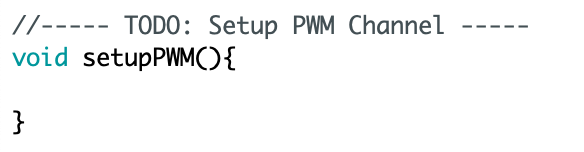
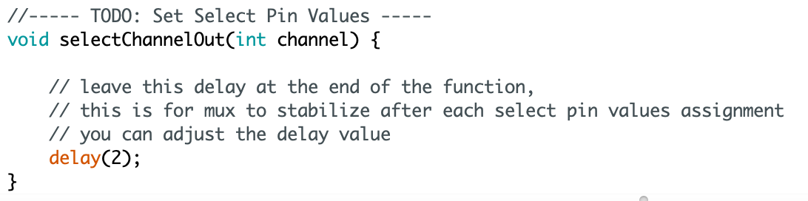

6.810 Engineering Interactive Technologies (fall 2021)
Pset3: Sensing Multi-Touch Input
In this problem set, you will write Arduino code to sense the touch signals from your multi-touch pad. At the end of this problem set, you will be able to recognize when a user is touching.
Steps:
- Generate PWM Signal on ESP Sender Pin
- Use Multiplexer to Send PWM Signal to Specific Electrode Columns
- Read Signals from Electrode Rows via SPI Communication
- Inject and Read Signals in the Correct Order
- Debug Circuit
Help us Improve Class Materials for PSet3:
Please let us know if anything was confusing in the write up or if you had trouble with the test program.
You can add your comments here.
Ask a TA to give you a wired up multi-touch pad if something went wrong in pset2
In case you did not finish pset2, you can ask a TA to provide you with a wired up multi-touch pad, i.e. with the completed circuit. If you finished pset2, but it turns out that your circuit is incorrect you can either ask a TA to fix it with you or they can give you a new clean circuit they built from scratch.
(1) Generate PWM Signal on ESP Sender Pin
Let's start by writing the code that generates the PWM signal at the sender pin.
Pulse Width Modulation (PWM): Remember from the EL display lab that PWM is a technique that can be used to create voltages in-between 0V and 3.3V by switching the signal at the PWM pin on and off. The longer the signal is off, the lower the voltage. In the EL-display lab we had used PWM to dim our display since the amount of voltage determines how bright the display is. Here in our multi-touch pset, we use PWM to generate a time-varying voltage at a constant frequency, which will allow us to determine changes in capacitance when the user is touching (this is more advanced electronics and we spare you the details).

Download Skeleton Code: Start by downloading the skeleton code for pset3 from here. You will fill out the 'setupPWM()'' function to create the PWM signal using the steps below.

Configuring the PWM Signal: First, you need to specify which type of PWM signal you want to generate. For this, you can use the 'ledcSetup()' function, which generates the PWM signal on the LED control (LEDC) peripheral. The function name reflects that it is primarily designed to control the intensity of LEDs, but it can also be used to generate PWM signals for other purposes.
ledcSetup(int channel_number, int frequency, int duty_resolution)
Channel Number: The LEDC peripheral has 16 channels which can generate independent waveforms (note that these are NOT pin numbers on the ESP, but internal channels inside the ESP). The channel numbers range from 0-15. For our purposes, you can pick any channel number you like as the parameter.
Duty Resolution: Let's recap briefly from the EL display lab. The duty cycle is defined as the percentage of the period for which the signal is "high" (see image above on the right). For example, a signal that has a 50% duty cycle is high for one half of the period and low for the other half, whereas a 25% duty cycle is high for only the first quarter and then low for the remaining three quarters. In the EL display lab, this has resulted in different brightnesses, i.e. 50% duty cycle is brighter than 25% duty cycle. For the display lab, we wanted to have 8 different brightnesses for dimming and had thus chosen a duty resolution of 3 bits, which can generate up to 8 different PWM duty cycles (in addition to a 0% PWM duty cycle which is not counted in the 3 bits since it's the default). Let's apply this to our multi-touch pad. For the multi-touch pad, we need a duty cycle of 25%. We spare you the details of why exactly we need this duty cycle. What is the smallest duty resolution that can create a 25% duty cycle? Submit your answer here (question 1) and then use it as the parameter in the function.
Frequency: For multi-touch sensing, we need a frequency of 4MHz. We will spare you the details why we need exactly this frequency. Unfortunately, the available PWM frequencies are directly affected by the duty resolution. The higher the duty resolution (i.e. the more bit), the lower the available PWM frequencies. So how do we know if we can support 4MHz with our chosen duty resolution? Luckily, some people created this formula for you to check:
max available frequency = microcontroller clock cyle / 2^bits from the duty resolution
// microcontroller clock cycle (80MHz for ESP32) divided by 2 to the power of bits
// from the duty resolution
If we need at least 4MHz for the frequency, what are the possible duty resolutions we could use that would still enable a frequency of 4MHz or more? Submit your answer (question 2) here in the Google Form. We hope you come to the conclusion that our chosen duty resolution is valid for 4MHz and you can thus use the value as the parameter in the function. Note that the function takes the frequency in Hz, so you need to do the conversion and then enter that number into the parameter.
Specify the Output Pin of the PWM Signal: Now that you configured the PWM signal that will be generated by the LEDC peripheral, you need to specify on which ESP pin number the signal should appear. Use the GPIO pin that goes from the ESP to the multiplexer's SIG pin. The PWM channel number is the same as above.
ledcAttachPin(GPIO_PIN, channel_number);
Generating the PWM Signal on the Output Pin: Finally, you need to tell the ESP which duty cycle you want to use for your PWM signal and generate the actual signal using the ledcWrite() function:
ledcWrite(channel_number, duty_cycle);
Duty Cycle: In the duty cycle parameter, you tell the ledcWrite() function, which of the duty cycles from your duty resolution should be used. Continuing the example from above, let's assume you chose 4 bits, which gives you 16 values ranging from 6.25%, 12.5%, 18.75%, 25%, 31.25% .... 100%, then your duty cycle parameter is the index of the duty cycle you want to use. For instance, using 2 would give you 18.75% for the duty cycle. Based on the duty resolution you chose for question number 1, choose the correct duty cycle parameter. Submit your answer (question 3) in the Google Form here and then use it as the parameter in the function.
Once you submitted all your answers with the google form, feel free to reach out on slack to have your answers confirmed. Even if your PWM is wrong, you can still work on section #2 and #3 and everything should be fine. Only section #4 may give you a weird signal if something is wrong with your PWM.
(2) Use Multiplexer to Send PWM Signal to Specific Electrode Columns
Now that you are generating the PWM signal at the ESP GPIO sender pin that is connected to the multiplexer SIG pin, you are ready to write a function that will tell the multiplexer to which pin (i.e. electrode column) it should forward the signal to. Note that even if you did not get the PWM signal in section #1 working, you can still work on this section here (instead of the PWM signal just use digitalWrite(HIGH) for the multiplexer's SIG pin).

How to redirect the signal to a desired channel?: The multiplexer receives the PWM signal on the input pin (SIG). It then needs to determine to which of the output pins (C0-C15) the signal should be forwarded to. To do this, it uses the address pins S0 - S3 to create the address that determines which output pin (electrode column) the signal should be send to. Why four pins? The multiplexer expects a binary signal. For instance, sending 0,0,0,0 to S0-S3 results in the output pin C0. In contrast, sending 0,1,1,0 sends the signal to C6. Notice that you don't have to store everything in binary as long as you are comfortable with bit operations in C, for example int number & 1 (or int number & 0001) will return the least significant bit of the number, and int number & 2 (or int number & 0010) will return the second to least significant bit of the number. All solutions are welcome here as long as it works. Let's implement this in the next section.
Setup Address Pins (S0-S3) as Digital Pins: First, check which GPIO pin numbers you used for the multiplexer's S0 - S3 pins. Create the digital pins in your Arduino code and set the correct PinMode.
Compute the Bit Values for the Address Pins: Fill out the selectChannelOut(int channel) function in the skeleton code. The function takes as input an 'int' for the channel number (0-8, since we have 9 sender lines in our 8x9 multi-touch pad) and then assigns the correct bit values to the 4 select pins (S0 - S3). Use 'digitalWrite' to write the correct value to each of the S0-S3 pins after you determined if they should be 0 or 1.

Testing the Multiplexier Channel Select Function: You can test if your channel selection function works properly in the following way: First, choose one of the C0-8 channels as the output pin for testing and set it in your selectChannelOut(int channel) function, upload the code to the ESP. Next, connect the SIG pin on Multiplexer to the ESP32's 3.3V pin, which will create a 'HIGH' signal that your code will forward to your chosen C0-8 pin if all works correctly. Use a multimeter in 'V' mode and measure with one probe on your chosen C0-8 pin and the other probe on GND. You should see 3.3V in the display if everything is ok. If you see 0, no voltage is applied. If it's not working, check both your code and your wiring.

(3) Read Signals from Electrode Rows via SPI Communication
Now that you can foward the PWM signal to specific electrode columns, you are ready to write the code for reading the signals from the electrode rows. Note that even if you did not finish section #2, you can still work on section #3 here.
Remember from pset2 that we had wired up an additional ADC converter (MCP3008 chip) to get cleaner signals from our multi-touch pad, i.e. the MCP3008 chip converts our analog touch signals better than the ESP GPIO pins would be able to do. We had also discussed that the MCP3008 chip communicates with the ESP via the Serial Peripheral Interface (SPI). To write code that reads the signals via SPI, you will have to do the following steps.
Install MCP3008 Library: Download and install the MCP3008 library by opening the Arduino IDE and going to Sketch -> Include Library -> Manage Libraries and search for the MCP3008 library. Restart your Arduino IDE after you installed the library.
Look at MCP3008 Example Code: Go to File -> Examples and look at the bottom where it says Examples from Custom Libraries to find example code that shows how to use the MCP3008 library. We recommend you look at the simpletest example.
Include Library: As you can see in the simpletest example, you need to first include the library on top in the skeleton code.
Instantiate Library: After this, you need to declare an object of the library.
Open Communication Channel: Next, you need to open the SPI communication channel with begin() in the setup function. However, we do not want to use the empty contructor begin() but instead also provide the pin numbers. You can see an example of this further down in the 'simpletest' example in the code that is commented out. Fill the pin numbers in according to your wiring.
// Software SPI (specify all, use any available digital)
// (sck, mosi, miso, cs);
adc.begin(13, 11, 12, 10); // for ESP32, use (14, 13, 12, 25)
Start reading signals: Once the channel is open, you can read the signal from one of the input channels CH0-CH7 using the readADC(channelnumber) function (see the 'simpletest' example code). If you serial print the result, you should see your analog signal coming through.
Testing your Code: You can check if the SPI communication between the ESP and the MCP chip works properly by doing the following: Instead of connecting your multi-touch pad to the MCP chip, connect a GPIO pin from the ESP to one of the MCP chip CH input channels and set the GPIO pin to 'HIGH'. Next, read the signal with the readADC(channelnumber) function and plot the result on the Serial Plotter. You should see a signal there around 1000. If you see '0' your SPI communication is not working and nothing is coming through. You either wired up the MCP chip incorrectly in pset2 or you are reading from the wrong channel.
(4) Inject and Read Signals in the Correct Order
Now that you have code for injecting and reading signals, you are ready to write the meta-level code that tells your program when to inject into which electrode column and when to read which of the electrode rows.
Putting your Code in loop(): Since we will continuously read data from our multi-touch pad, your code should be in the loop() function.
Inject Column #1, Read all Rows, Inject Column #2, Read all Rows...: Your code needs to first send a signal through column #1, then read each row of the multi-touch pad one after another (rows #1-#8), and then inject the signal into column #2, read again row #1-#8 and so on.
Averaging Read Signals: When reading the signal from a specific row, sample multiple times (e.g., execute read() 20 times and average the readings together) to get a more accurate and smooth signal. You should do the multiple sampling and averaging before you move on to the next row.
Print Data to Serial Monitor: Serial print the data in the format: columm0, row0val, row1val, row2val... Please follow the specific format since we will use it later to read the data into Processing. A sample serial output would look like this:
0,50,83,58,79,108,75,82,54 //columm0, row0val, row1val, row2val
1,55,92,120,84,63,61,88,53 //columm1, row0val, row1val, row2val
2,61,64,73,66,92,78,67,57
3,65,117,116,84,48,81,91,71
4,65,128,116,54,76,81,88,59
5,61,86,66,54,114,78,64,64
6,59,86,120,83,85,75,93,63
7,56,86,116,70,72,83,80,64
8,23,82,74,68,98,64,62,52
...
Checking Result in Serial Plotter: If you open up the Serial Plotter, it should look like the image on the left when the multi-touch pad is not touched, i.e. all values are roughly the same height. The middle shows a start of touching and the right the end of touching. If you do not see these, please move on to the next section that will help you debug common problems.
(5) Debug Circuit
If you do not see the above signals on your Serial Plotter, you can check the following parts of your circuit before coming to OHs for help.
Testing the Generated PWM signal: If you want to test if you are generating the correct PWM signal, we will have an oscilloscope ready in lab and at the OH. If you know how to use an oscilloscope, you can also use it yourself outside the OH.

Tuning the Multiplexer Delay Function: In the skeleton code the function selectChannelOut(int channel) has a delay() function. You may need to adjust the delay slightly depending on the amount of capacitive coupling your specific circuit layout has.
Capacitive coupling slows down the signal writing process to pins and can cause the multiplexer to fall behind with assigning the correct output channels C0-C8 based on the pin values from the address pins S0-S3, thus writing into the wrong output channel, which leads to weird behavior. Adding a larger delay allows the multiplexer to receive stable select pin values for S0-S3 and to assign the correct output channel from C0-C8. Usually a delay of 2 - 5 milliseconds is sufficient.
//----- TODO: Set Select Pin Values -----
void selectChannelOut(int channel) {
// leave this delay at the end of the function,
// this is for mux to stabilize after each select pin values assignment
// you can adjust the delay value
delay(2);
}
Check Connections between Multitouch Pad and FPC Connectors: Another aspect to check is whether the inkjet printed wires of your multitouch pad are still connected to your FPC connectors. If the columns are not connected anymore, the injected PWM signal will never reach your multi-touch pad. If the columns are connected to the FPC, but not the rows, a signal will be injected but the signal cannot be read. You can test with a multimeter if the FPCs are still making a connection to the inkjet printed wires, please go to pset2 section #6 if you need a reminder of how to test it.
If you still don't see the expected results from Arduino Serial Plotter, please come to an OH and one of our TAs will take a look with you together!
Deliverables
For grading, please upload the following to your google drive student folder:
- the .ino file of your Arduino program
- a short video showing the circuit working, i.e. show that touching the multi-touch pad produces a different signal than not touching the multi-touch pad. Please record at least 2-3 subsequent touches in the video to show it works reliably. Make sure the Serial monitor and your multitouch pad are both visible at the same time.
Grading
We will give 20 pts in total:
- 5pts: Does the code generate the PWM signal correctly? Are the answers in the google form correct?
- 5pts: Does the code correctly select the channel on the multiplexer to address the correct electrode column?
- 5pts: Does the ESP communicate with the MCP chip correctly via SPI to read the signals from the electrode rows?
- 5pts: Are the signals injected and read in the correct order? Does the video show touch recognition working reliably?
Please let us know if anything was confusing in the write up or if you had trouble with the test program.
You can add your comments here.
In case you did not finish pset2, you can ask a TA to provide you with a wired up multi-touch pad, i.e. with the completed circuit. If you finished pset2, but it turns out that your circuit is incorrect you can either ask a TA to fix it with you or they can give you a new clean circuit they built from scratch.
ledcSetup(int channel_number, int frequency, int duty_resolution)
// microcontroller clock cycle (80MHz for ESP32) divided by 2 to the power of bits
// from the duty resolution
ledcAttachPin(GPIO_PIN, channel_number);
ledcWrite(channel_number, duty_cycle);
// Software SPI (specify all, use any available digital)
// (sck, mosi, miso, cs);
adc.begin(13, 11, 12, 10); // for ESP32, use (14, 13, 12, 25)
//----- TODO: Set Select Pin Values -----
void selectChannelOut(int channel) {
// leave this delay at the end of the function,
// this is for mux to stabilize after each select pin values assignment
// you can adjust the delay value
delay(2);
}